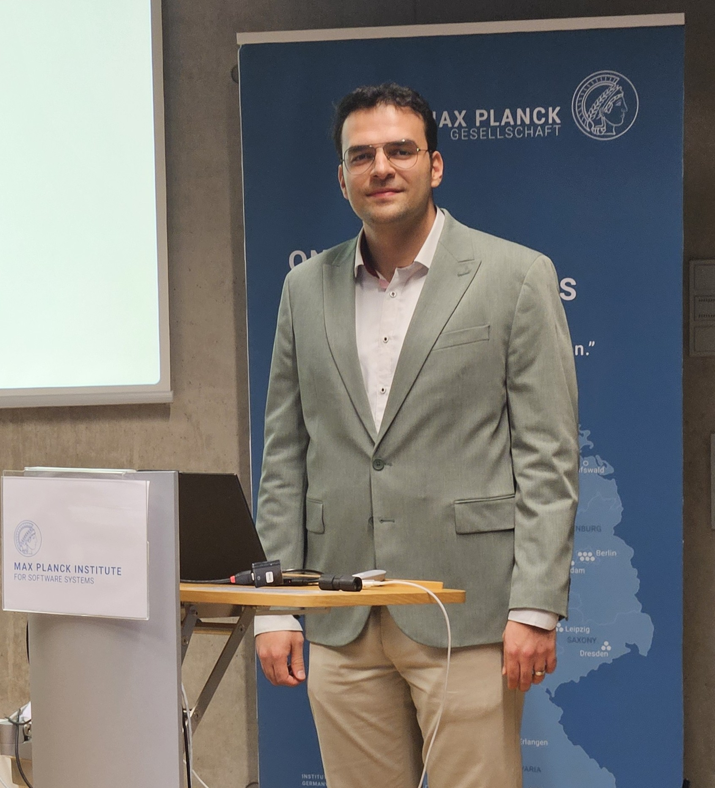

Efficient language models
Structured sparsity, hardware-aware inference, and hardware–software co-design.
Munich, Germany
AI researcher working on efficient language models and optimization.
I studied electronics engineering at Shiraz University and began my career in R&D and data science. I then earned a master’s in Visual Computing at Saarland University, where I developed an optimization method for choosing inks that reproduce the colors of watercolor paintings under different lighting conditions.
For my PhD in Computer Science at Saarland University, I worked at the Max Planck Institute for Informatics on uncertainty-aware neural network inversion and large-batch Bayesian optimization for computational design. During my PhD, I also worked at Amazon Web Services on hardware-aware 2:4 structured sparsity for large language models. I defended my dissertation in November 2026.
I’m now a Senior Strategic AI Researcher at Huawei’s Heisenberg Research Center in Munich, where I study efficient inference, reasoning models, and agentic AI.

Structured sparsity, hardware-aware inference, and hardware–software co-design.
Neural network inversion, uncertainty quantification, and parallel Bayesian optimization for design problems.
Retrieval, tool use, and workflows for literature discovery and research monitoring.